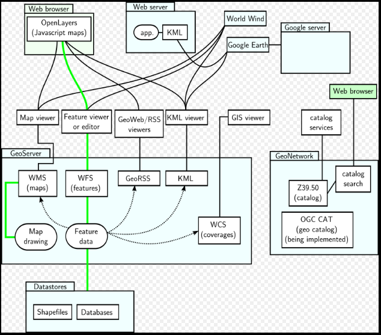

OpenLayers 是什么？
OpenLayers 是一个专为Web GIS 客户端开发提供的JavaScript 类库包，用于实现标准格式发布的地图数据访问。
OpenLayers 支持的地图来源包括Google Maps、Yahoo、 Map、微软Virtual Earth 等，
用户还可以用简单的图片地图作为背景图，与其他的图层在OpenLayers中进行叠加，
在这一方面OpenLayers提供了非常多的选择。除此之外，OpenLayers实现访问地理空间数据的方法都符合行业标准。
OpenLayers支持 OGC 制定的WMS（Web Mapping Service）和WFS（Web Feature Service）等网络服务规范，
可以通过远程服务的方式，将以OGC 服务形式发布的地图数据加载到基于浏览器的OpenLayers 客户端中进行显示。
查看原图

OpenLayers can communicate through several protocols
GeoServer and GeoNetwork with interfaces and applications sketch.
Green represents read and write paths. Dotted arrowed line indicates mostly read-only data flow.